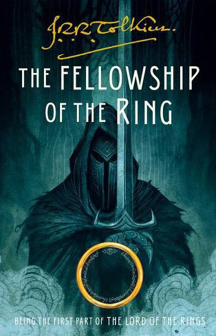

The first sets the stage for the adventure and follows Frodo Baggins as he flees from his home in the Shire to escape the minions of the Dark Lord Sauron. Sauron seeks the One Ring that will allow him to control the Bearers of the nineteen other Rings and control the three major races of Middle-earth: Elves, Men, and Dwarves. The One Ring has been inherited by Frodo who finds himself unwittingly in the midst of a struggle for world domination.
The first chapter in the book begins quite lightly, following on from The Hobbit which is more of a whimsical children's story than The Lord of the Rings. It begins with Bilbo celebrating his 111th (or eleventy first, as it is called) birthday, on the same day that Frodo celebrates his 33rd birthday (his 'coming of age'). At the birthday party, Bilbo disappears after his speech, to the surprise of all. Frodo later learns about the ring which he had used to make himself invisible, and also about some of its darker powers.
Heeding the advice of the wizard Gandalf , Frodo leaves his home, taking the Ring with him. He hopes to reach Rivendell, where he will be safe from Sauron, and where those wiser than he can decide what to do about the Ring.
In his journey he is accompanied by three hobbit friends, Peregrin Took, Meriadoc Brandybuck and Samwise Gamgee , often refered to as Merry, Pippin and Sam. From the start they are pursued by Black Riders, the Ringwraiths who serve Sauron. Narrowly escaping these and other dangers and meeting other interesting characters en route (e.g., Tom Bombadil) they eventually come to Bree, where they meet Strider, another friend of Gandalf who leads them the rest of the way to Rivendell, through further hardships.
Frodo is stabbed upon the mountain of Weathertop by the chief of the Nazgûl with a Morgul-knife - as part of the knife stays inside him, he gets sicker on the rest of the journey. They also pass the trolls which had been turned to stone in the previous book, The Hobbit.
Chapters:
- I: A Long-expected Party:
- Details Bilbo and Frodo's Birthday Party, chapter ends with Bilbo leaving the Shire.
- II: The Shadow of the Past:
- Gandalf tells Frodo the true nature of the ring, and how it must be taken to Mordor and destroyed. Sam, who has been listening at the window, is told to accompany Frodo.
- III: Three is Company:
- Frodo sells Bag End, and officially is going to move to a house at Crickhollow in the area beyond Bucklebury in Buckland; he actually plans to disappear without causing too much of a fuss. Frodo, Sam and Pippin set out through the South Farthing of the Shire towards Buckland, and encounter a black rider. They also meet Gildor the wood elf, with other wood elves.
- IV: A Short Cut to Mushrooms:
- They meet Farmer Maggot while taking a short cut, and he gives them some of his prized mushrooms. Merry joins them at the end.
- V: A Conspiracy Unmasked:
- Takes place at Frodo's new house at Crickhollow. The title refers to Frodo about to tell Merry and Pippin about his quest, who he had previously believed not to know about it, and they tell him that they had known much of it all along. They also meet Fatty Bolger. Frodo decides to leave the next day through the Old Forest, as it is an unexpected direction, rather than travelling on the roads.
- VI: The Old Forest:
- Although trying to avoid it, the hobbits get lost and travel to the River Withywindle, the "queerest part of the whole wood". Merry and Pippin are trapped inside Old Man Willow, and are freed only when Tom Bombadil arrives.
- VII: In the House of Tom Bombadil:
- Tom knows much about the hobbits, and even tries on the Ring, yet it does not have any effect on him - it doesn't even make him invisible. Frodo tries on the ring then to see if it 'works', and Tom Bombadil is also able to see Frodo while he has the ring on.
- VIII: Fog on the Barrow-downs:
- Travelling through the Barrow-downs, the hobbits are imprisoned by Barrow-wights, where they are rescued again by Tom Bombadil. The hobbits are given daggers from the treasure in one of the downs.
- IX: At the Sign of the Prancing Pony:
- The hobbits reach the The Prancing Pony inn at Bree, where Frodo uses a false name, Underhill. Later, after singing a song on a table, he trips and accidentally puts the ring on his finger, disappearing, which causes a commotion.
- X: Strider:
- Strider, who had at first seemed menacing, turns out to be friendly. The innkeeper, Butterbur, gives Frodo a late letter from Gandalf, which tells him that Strider is a friend of Gandalf's whose real name is Aragorn.
- XI: A Knife in the Dark:
- The hobbits set out from Bree with Strider on foot after their horses had bolted when Black Riders arrived at the inn at night. The Riders had attacked the beds which they were supposed to be staying in, though in vain as Strider had them stay in another room. They buy a pony from Bill Ferny. They pass through the Midgewater Marshes, and reach Weathertop. There they are attacked by five Black Riders; Frodo puts on the ring to escape them, and is stabbed in the shoulder by the Witch-king of Angmar, leader of the nine Ringwraiths (Nazgul).
- XII: Flight to the Ford:
- They pass the trolls Bert, Tom and William, which were turned to stone by Gandalf in The Hobbit. Eventually, they meet the elf Glorfindel from Rivendell, who allows Frodo to take his white horse to escape the Ringwraiths on their way to Rivendell. The Black Riders are washed away in a flood over the Ford.